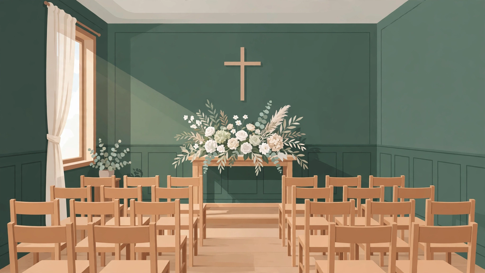

通夜や告別式を行わず、ごく限られた近親者のみで火葬場にてお別れをする「火葬のみ（直葬・火葬式）」は、体力面や経済面の負担を抑えたい場合や、参列者を呼ばずに静かに見送りたい場合に選ばれる形式です。一方で、「基本プランの金額だけを見ていたら、安置料や火葬料が別途かかり想定より高くなった」「菩提寺への相談を後回しにして納骨時に困った」といった行き違いが生じやすい形式でもあります。
鎌倉新書『お葬式に関する全国調査（2024年）』の平均値では、直葬・火葬式の総額平均は42.8万円となっており、回答が多い価格帯は20万〜40万円未満です。平均値はオプションや会食の有無で上下し実態の中心とは限らないため、「基本料金に含まれる項目」「火葬場へ支払う実費」「条件によって増える追加費用」の3つに分けて確認することが大切です。
本記事では、火葬のみ（直葬・火葬式）の費用相場と他形式との比較、見積書の内訳項目、条件別の試算早見表、事前に押さえておきたい親族・菩提寺への配慮、火葬のみでも申請できる公的給付制度まで整理します。
この記事のポイント（火葬のみ・直葬の結論目安）
- 直葬・火葬式の費用相場：鎌倉新書『お葬式に関する全国調査（2024年）』の平均値で 42.8万円、回答が多い価格帯は 20万〜40万円未満（平均は実態の中心とは限らず、条件により価格帯に分布がある）
- 費用の3つの構成要素：①葬儀社の基本プラン費用（10万〜25万円前後が目安）＋②火葬料・待合室料などの実費（無料〜10万円前後が目安・地域差大）＋③安置延長や炉前読経などのオプション費用
- 金額が変わりやすい要因：火葬場の空き待ちによる安置日数・ドライアイスの延長、公営か民間かによる火葬料の差、僧侶による炉前読経（お布施）の有無
- 給付・税務の確認点：火葬のみでも、国民健康保険等の「葬祭費」や健康保険の「埋葬料（または埋葬費）」の対象になるケースがある（自治体や加入先への確認が必要）
- 全体比較：葬儀全体の費用構造は葬儀費用の総額・相場・内訳の総まとめ、各形式の比較は形式別の葬儀費用相場もご参照ください。
火葬のみ（直葬・火葬式）の費用相場｜調査平均は42.8万円・価格帯は20万〜40万円未満が多い
「火葬のみ」「直葬（ちょくそう）」「火葬式」はいずれも、式場での通夜・告別式を省き、ご逝去後の搬送・安置・納棺を経て火葬場でお別れと火葬を行う形式です。葬儀社によっては、火葬前に安置室等で短いお別れ時間を設けるプランを「火葬式」、面会を最小限にするプランを「直葬」と呼び分ける場合もあります。
まずは他の葬儀形式との費用水準を比べてみましょう。以下は、鎌倉新書『第6回 お葬式に関する全国調査（2024年）』（喪主経験者2,000名対象）における形式別の総額平均と価格帯の比較表です。
※出典：平均値・最多価格帯は鎌倉新書『お葬式に関する全国調査（2024年）』の平均値（お布施等別）。火葬料や安置延長費、お布施は地域・施設・宗派で異なる目安です。
| 葬儀の形式 | 総額の平均値 （鎌倉新書2024年調査） |
回答が多い価格帯 （同調査） |
式場での儀式 | 主な特徴と費用構造の違い |
|---|---|---|---|---|
| 直葬・火葬式（火葬のみ） | 42.8万円 | 20万〜40万円未満 | 通夜・告別式なし | 式場使用料・祭壇費がかからず、飲食費や返礼品費も発生しにくい |
| 一日葬 | 87.5万円 | 20万〜40万円未満 | 告別式＋火葬（1日） | 通夜を省き1日で式を行う形式（詳細：一日葬の費用） |
| 家族葬 | 105.7万円 | 60万〜80万円未満 | 通夜＋告別式＋火葬 | 親族中心で行う2日間の葬儀（詳細：家族葬の費用） |
| 一般葬 | 161.3万円 | 120万〜140万円未満 | 通夜＋告別式＋火葬 | 仕事関係者や近隣の方も招く形式。式場・飲食・返礼品の比重が大きい |
| （参考）葬儀全体の総平均 | 118.5万円 | — | 全形式を含む | 内訳平均：基本料金75.7万円＋飲食費20.7万円＋返礼品費22.0万円（※お布施等は別） |
※出典：鎌倉新書『お葬式に関する全国調査（2024年）』の平均値。平均値は高額帯の回答に引き上げられる性質があり、実態の中心とは限りません。実際には価格帯に分布がある点を踏まえて予算を見積もることが大切です。
なぜ「10万〜20万円台のプラン表示」と「平均42.8万円」に差が出るのか
パンフレット等で「直葬プラン10万円台〜」といった表示を見かける一方、調査の平均値が42.8万円（回答が多い価格帯は20万〜40万円未満）となっている背景には、主に4つの要因があります。
- 「火葬料」がプラン外の実費であることが多い：公営火葬場の住民料金なら無料〜数万円前後が目安ですが、都市部の民間火葬場では5万〜10万円前後の目安となる地域もあります。
- 火葬場の予約待ちによる安置日数の延長：法律上、ご逝去から24時間は火葬ができません。さらに火葬場の混雑で3〜6日ほど待つ場合、基本プラン（1〜2日分込みが多い）を超えた日数分の安置料・ドライアイス代が加算されます。
- お別れ花・面会室・納棺処置の追加：「棺にお花をたくさん入れたい」「火葬前に家族でゆっくり顔を見てお別れしたい」といったオプションを加えると数万〜10万円前後が上乗せされます。
- 火葬後の会食や返礼品の手配：拾骨後に親族で食事の席を設けたり、後日香典をいただいた方へ返礼品を手配したりする場合、飲食費・返礼品費が加わります。
必要最小限の手配なら20万〜30万円前後が目安に収まりやすい一方、民間火葬場の利用や安置延長、生花・会食などが重なると35万〜50万円前後が目安になると押さえておきましょう。
火葬のみの費用内訳と見積書のチェック項目
見積書を確認する際は、「①葬儀社へ支払う基本項目」「②火葬場へ支払う実費項目」「③希望や状況で変わるオプション・宗教者費用」に切り分けて確認します。
| 区分 | 内訳項目 | 一般的な金額目安 | プラン含有傾向 | 見積書での確認ポイント |
|---|---|---|---|---|
| ①基本 | 寝台車による搬送費 | プラン内（超過1万〜3万円前後目安） | 1〜2回分を含むことが多い | 「病院等→安置先」「安置先→火葬場」の2回分が含まれるか、距離上限と深夜割増を確認 |
| ①基本 | ご遺体安置施設利用料 | プラン内（超過1日5千〜2万円前後目安） | 1〜2日分を含むことが多い | 自宅安置か預かり安置か。預かり安置の面会可否と基本料金内の日数を確認 |
| ①基本 | ドライアイス・保全処置 | プラン内（超過1回8千〜1.5万円前後目安） | 1〜2回分を含むことが多い | 火葬待ちが長引いた場合の1日あたり追加単価を事前に確認 |
| ①基本 | お棺・仏衣・骨壺一式 | プラン内（変更時は差額数万円目安） | 標準品一式を含む | 特寸棺への変更要否や、地域の収骨慣習に合った骨壺かを確認 |
| ①基本 | 役所手続き代行・スタッフ | プラン内 | 死亡届代行と当日案内を含む | 死亡届提出・火葬許可証取得代行と、火葬当日の同行スタッフ範囲を確認 |
| ②実費 | 火葬料 | 無料〜10万円前後目安（地域差大） | プラン外（実費別途）が一般的 | 故人または喪主の住民登録地で公営の住民料金が使えるか、民間火葬場になるかを確認 |
| ②実費 | 火葬場の待合室使用料 | 無料〜3万円前後目安 | プラン外が多い | 収骨までの約1〜2時間を過ごす控室料と茶菓代の扱いを確認 |
| ③任意 | お別れ花・湯灌処置等 | 1万〜8万円前後目安 | 任意オプションが多い | 棺に納める切り花が基本プランに含まれるか、別途手配かを確認 |
| ③別枠 | 炉前読経のお布施 | 3万〜10万円前後目安（宗派・地域差大） | 葬儀社見積もりとは別枠 | 僧侶に火葬炉前での読経を依頼する場合の謝礼・お車代。無宗教なら不要 |
※上記の金額・単価は一般的な目安レンジであり、地域・施設・事業者・宗派によって異なります（火葬料やお布施の具体額は要出典確認事項として個別に確認が必要です）。
【条件別】火葬のみ（直葬・火葬式）の総額シミュレーション早見表
基本プランに実費や追加項目を合わせた支払総額の目安を、4つの条件別に整理しました。
| 想定ケース | ①基本プラン目安 | ②火葬場実費目安 | ③追加・オプション目安 | ④炉前読経お布施目安 | 支払総額の目安 |
|---|---|---|---|---|---|
| A：最小限・公営火葬場 （安置2日以内／無宗教／会食なし） |
12万〜18万円 | 0〜3万円 | 0〜2万円（花束等） | 0円 | 約12万〜23万円 |
| B：標準的・安置延長あり （火葬待ち4日／お別れ花／公営） |
15万〜22万円 | 1万〜4万円 | 4万〜8万円（延長＋花） | 0円 | 約20万〜34万円 |
| C：都市部・民間火葬場利用 （火葬待ち5日／面会・お別れ花あり） |
15万〜22万円 | 7万〜11万円 | 6万〜12万円（延長＋面会・花） | 0円 | 約28万〜45万円 |
| D：炉前読経＋親族会食あり （読経10分＋拾骨後に10名で会食） |
18万〜25万円 | 2万〜9万円 | 8万〜15万円（花＋会食等） | 3万〜10万円 | 約31万〜59万円 |
もし面会時間を長く取りたい場合や、親族10名以上で読経・会食も行いたい場合は、直葬に多くのオプションを足すよりも一日葬の費用や少人数の家族葬の費用と比較した方が総額差が小さくなることもあります。条件別の概算は葬儀費用シミュレーター（/simulator/）もご活用ください。
見積もりより高くなりやすい4つの確認ポイント
- 安置日数とドライアイスの超過単価：火葬場の混雑状況を確認し、「1日延びるごとに安置料＋ドライアイス代で合計いくら増えるか」を見積書に明記してもらいます。
- 搬送距離の上限と深夜・早朝割増：病院等から安置先、安置先から火葬場までの距離上限と、夜間搬送の割増有無を確認します（警察検案を伴う場合は検案関連費が別途かかることがあります）。
- 預かり安置中の面会条件：低価格帯プランでは「火葬当日まで面会不可」または「面会は有料予約制」の施設もあるため、家族が顔を見に行けるかを事前に確認します。
- 火葬当日の参列人数上限：プランによって同行人数（5〜10名程度まで等）の目安が設けられている場合があるため、親族の人数をあらかじめ伝えて待合室の広さを調整しましょう。
火葬のみを選ぶ前に押さえておきたい4つの注意点
① 菩提寺がある場合は必ず事前に相談する
先祖代々のお墓があるお寺（菩提寺）に将来納骨する予定がある場合、無断で読経・戒名なしの火葬のみを行うと、後日の納骨を断られる恐れがあります。契約前に住職へ事情を丁寧に伝え、「炉前読経のみでお願いできるか」「戒名や納骨法要をどう進めるべきか」を相談しておくことが不可欠です。
② 親族への事前説明と合意形成
地域の慣習を大切にする親族からは、式を行わないことに戸惑いの声が出る場合があります。故人の生前の意向や家族の体力・費用面の事情を主な親族へ事前に伝え、理解を得ておくとその後の供養も穏やかに進められます。
③ 知人・友人への訃報は「火葬後の事後報告」を基本にする
事前に広く訃報を伝えると火葬場へ弔問客が駆けつけ、ロビーや待合室で対応しきれなくなることがあります。参列をお願いしない方へは火葬後に挨拶状等で事後報告とし、必要に応じて香典・供花辞退の旨を添えます。
④ 香典収入を前提にしない資金計画を立てる
火葬のみでは参列者がごく限られるか香典を辞退するケースが多いため、「香典で費用を賄えるだろう」とは見込まず、見積総額を自己資金や故人の預貯金等で支払う前提で計画を立てましょう。
ご逝去から火葬・収骨までの流れ
| ステップ | 時期の目安 | 主な手続きと確認事項 |
|---|---|---|
| 1. ご逝去・搬送依頼 | 当日（数時間以内） | 医師から死亡診断書を受け取り、葬儀社の寝台車で自宅または預かり安置施設へ搬送する |
| 2. ご安置・打ち合わせ | 当日〜翌日 | ドライアイス処置を行い、火葬場の予約日時と書面の総額見積書（実費・延長単価込み）を確定する |
| 3. 死亡届・火葬許可証取得 | 火葬前日まで | 役所へ死亡届を提出し「死体火葬許可証」を受け取る（多くの場合は葬儀社が提出代行） |
| 4. 納棺・最後のお別れ | 火葬前日〜当日 | お棺にご遺体とお別れ花・規定内の副葬品を納める（※金属・ガラス・ペースメーカー等は事前確認必須） |
| 5. 出棺・火葬・収骨 | 2〜5日後目安 | 火葬場へ移動し炉前でお別れ（希望により読経）。約1〜2時間の火葬後に収骨し「埋葬許可証」を受け取る |
| 6. 遺骨安置・費用精算 | 当日〜1週間以内 | 遺骨を自宅等へ安置し費用を精算する。埋葬許可証（納骨時に必須）と領収書を厳重に保管する |
火葬のみでも利用できる公的給付制度と税務上の扱い
通夜・告別式を行わない火葬のみでも、要件を満たせば以下の公的給付や税務上の控除対象になります。
- 国民健康保険・後期高齢者医療の「葬祭費」：故人が加入していた場合、葬儀（火葬）を行った喪主等へ支給されます。金額は自治体で異なり、5万円の自治体が多い傾向にあります（例：東京都大田区は7万円）。火葬のみでも対象になる自治体があり、申請期限は葬儀（火葬）を行った日の翌日から2年以内です（自治体の案内による）。
- 健康保険（協会けんぽ等）の「埋葬料・埋葬費」：被保険者が亡くなった場合、生計を維持されていた方へ埋葬料5万円、いない場合は実際に埋葬を行った方へ埋葬費（実費・上限5万円）が支給されます。被扶養者が亡くなった場合は被保険者へ家族埋葬料5万円が支給されます（いずれも申請が必要）。詳細は葬儀の補助金・葬祭費・埋葬料をご覧ください。
- 生活保護の「葬祭扶助」：費用負担が困難な場合、事前申請を原則として自治体が定める基準額の範囲内で火葬等の費用が扶助されます（詳細：生活保護と葬祭扶助）。
- 相続税の債務控除と確定申告の扱い：火葬に直接かかった費用は相続税計算上の債務控除の対象になります（墓地購入費や香典返し、法要費用等は対象外。詳細：相続税の債務控除と相続放棄）。一方、葬儀・火葬費用は所得税の医療費控除の対象ではありません（詳細：葬儀費用の控除の範囲と確定申告）。
※税務・給付の記載は一般情報です。個別の状況は税務署・自治体・加入中の健康保険にご確認ください。また、申請・申告に備えて葬儀社や火葬場の領収書は必ず保管しておきましょう。
直葬の当日スケジュール・見積もり比較・葬儀後手続きガイド
ご逝去から収骨までの具体的な時間配分・持ち物・服装マナーは「直葬・火葬式の当日の流れと注意点」、安置延長費や火葬料を含めた明細の確認法は「葬儀の見積もりの取り方と比較ポイント」で詳しく整理しています。火葬後に必要な役所・年金手続きは「葬儀後の手続きと費用の入口」をあわせてご覧ください。
火葬のみ（直葬・火葬式）に関するよくある質問（FAQ）
Q1. 火葬のみの場合、服装は喪服を着る必要がありますか？
A. 火葬場には他の葬家の参列者も訪れ、職員も礼装で対応するため、準喪服または黒・紺・グレーなどの落ち着いたダークスーツ・平服で参列するのが一般的です。
Q2. 読経も戒名もなしで火葬して法律上の問題はありますか？
A. 死亡届の提出と自治体が交付する「死体火葬許可証」があれば法律上の問題はありません。ただし菩提寺のお墓へ納骨する予定がある場合は、戒名や葬儀儀礼がないと納骨を断られることがあるため必ず事前に相談してください。
Q3. 病院で亡くなった直後に直葬を依頼しても大丈夫ですか？
A. 多くの葬儀社が24時間体制で搬送を受け付けており、その場で「火葬のみで希望している」と伝えて差し支えありません。打ち合わせ時には必ず火葬料と安置延長単価を含めた書面見積もりを確認しましょう。
Q4. 火葬のみの費用をクレジットカードで支払うことはできますか？
A. 基本プラン費用はカード決済や分割払いに対応する葬儀社が増えていますが、火葬場へ支払う火葬料や僧侶へのお布施は現金払いのみとなるのが一般的です。カード対応範囲を契約前に確認しておきましょう。
Q5. ご逝去したその日のうちに火葬を行うことはできますか？
A. 日本では「墓地、埋葬等に関する法律」により、原則として死後24時間を経過した後でなければ火葬を行えないと定められています。また火葬場の予約状況によって数日間の安置が必要になることもあるため、ご遺体の安置場所や面会の可否を打ち合わせ時に確認しておくことが大切です（当日の詳しい進行は直葬・火葬式の当日の流れを参照）。
まとめ｜内訳と実費を切り分けて納得のいくお見送りを
火葬のみ（直葬・火葬式）の費用は、鎌倉新書『お葬式に関する全国調査（2024年）』の平均値で42.8万円、回答が多い価格帯は20万〜40万円未満です。基本プラン料金だけでなく、①火葬場の実費、②火葬待ち日数に応じた安置・ドライアイス代、③お別れ花や炉前読経の有無の3点を見積書で確認し、菩提寺への相談や葬祭費・埋葬料の申請準備もあわせて進めておきましょう。
- 全体像と形式比較：葬儀費用の総額・相場・内訳の総まとめ ／ 形式別の葬儀費用相場 ／ 一日葬の費用 ／ 家族葬の費用
- 概算ツール：葬儀費用シミュレーター（
/simulator/） - 給付・扶助・税務：葬儀の補助金・葬祭費・埋葬料 ／ 生活保護と葬祭扶助 ／ 葬儀費用の控除の範囲と確定申告 ／ 相続税の債務控除と相続放棄
更新日・数値の確認方法について
- 最終更新日：2026年11月12日（数値・制度情報の確認日：2026-11-12時点）
- 執筆・編集：葬儀費用ナビ編集部
- 金額目安の算出・確認方針：形式別の平均値・価格帯は鎌倉新書『第6回 お葬式に関する全国調査（2024年）』を参照しています（平均値は高額帯等の影響を受けるため実態の中心とは限りません）。基本プラン内訳、安置延長単価、火葬料、お布施等の金額レンジは一般的な目安であり、地域・施設・事業者・宗派によって異なります。手配時は各事業者の個別見積書および自治体・健康保険・税務窓口の公式案内をご確認ください。
関連ポリシー：数値目安の算出基準・出典確認フロー ／ 広告掲載ポリシー（#PR表記方針）
出典・参考情報メモ（公開前差し替え用プレースホルダ）
※公開CMS入稿時に以下の公的機関・調査主体・公式案内ページの最新情報を確認のうえ差し替えを実施する（基準データ照合日：2026-11-12時点）。
[出典プレースホルダ：株式会社鎌倉新書「第6回 お葬式に関する全国調査（2024年）」（総額平均118.5万円、直葬・火葬式平均42.8万円、最多価格帯20万〜40万円未満等の確認用）][出典プレースホルダ：厚生労働省「墓地、埋葬等に関する法律の概要」（24時間以内の火葬禁止規定・火葬許可証手続き確認用）][出典プレースホルダ：全国健康保険協会（協会けんぽ）「埋葬料・埋葬費・家族埋葬料案内」および各自治体「国民健康保険・後期高齢者医療 葬祭費案内（東京都大田区7万円等の例・申請期限2年以内）」（給付要件確認用）][要出典確認メモ：火葬料の具体額（公営火葬場：無料〜数万円目安、都市部民間火葬場・管外利用：5万〜10万円前後目安は地域差が大きいため入稿時に主要自治体料金表と照合すること）][要出典確認メモ：直葬プラン内訳・安置延長単価・ドライアイス追加単価、および炉前読経のお布施金額帯（3万〜10万円前後目安・宗派や地域で大きく異なる）は一般的な目安表記としており、要出典確認項目として入稿時に再点検すること]